How to use EtreCheck
EtreCheck is frequently recommended on internet discussion forums like Apple Support Communities. EtreCheck was designed to help provide the kind of information members of Apple Support Communities need when helping you with your Mac. But you can run EtreCheck and read the report yourself. The following is an explanation of how to use EtreCheck and the meaning of each section of an EtreCheck report.
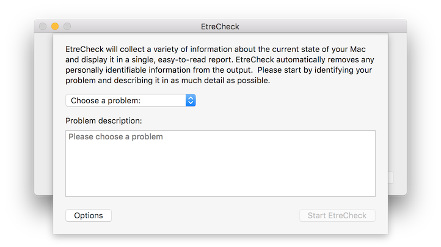 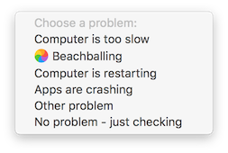When you first run EtreCheck, you will have to choose a problem that best describes your issue. You should also include any other details you can think of in the problem description.
You can click the Options button to turn on more diagnostics. This is an advanced feature and should not be used when posting an EtreCheck report online.
Finally, click the Start EtreCheck button to generate your EtreCheck report.
-
Header:
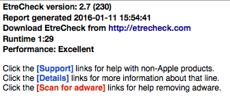 This section contains basic information about EtreCheck itself, when you ran it, and how long EtreCheck took to run. People sometimes omit this section but it can be very useful as a rough estimate of your machine's performance. If EtreCheck takes more than 5 minutes to run, you have problems.
This section also explains that the EtreCheck report is a hypertext document. You can click on virtually any part of the report for more details. -
Problem:
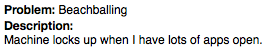 This is the problem you described when you first ran EtreCheck. -
Hardware Information:
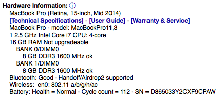 Basic Information about your machine - the number of processors, cores, and RAM. This section connects to Apple support servers to return the ”marketing name” of your machine that Apple uses. This section also includes links to Apple support resources for your machine such as technical specification, user guides, warranty & service, and RAM upgrade instructions. -
Video Information:
Your graphics card and any attached displays. -
System Software:
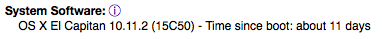 Your operating system version, including specific build version. Also reports the time since your machine has been restarted. If possible, you should run EtreCheck on your machine while it is encountering problems. EtreCheck results will be more valuable if you run it before restarting. -
Disk Information:
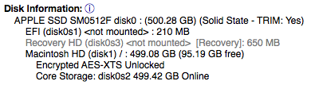 This may include several hidden volumes used for startup and recovery. This section may report low disk space, disk errors, or SMART failures. If your report lists disk errors or SMART failures, you probably need to replace your hard drive. Disk Utility cannot repair these errors. -
USB/Thunderbolt/Firewire Information:
Any USB, Thunderbolt, or FireWire peripherals, such as external disk drives. -
Configuration files:
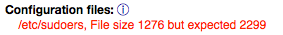 If there have been unusual, low-level changes to your system configuration files, they will be listed here. This may not necessarily be a problem unless you don't recognize these files or know what these changes are. -
Gatekeeper:
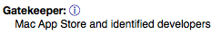 Your current GateKeeper settings. This should always be set to "Mac App Store and identified developers". -
Unknown files:
 Possible ad-injection software or malware. EtreCheck maintains a whitelist of known, legitimate software. If you have software that is not on EtreCheck’s whitelist, EtreCheck will flag it as an “Unknown File”. These “Unknown Files” may include false positives that are new or ununusal, but legitimate, software that needs to be added to the whitelist. They could also include new adware or malware that a traditional anti-malware tool would miss. EtreCheck gives you the ability to report the files you don’t recognize to EtreCheck's adware blacklist and update the EtreCheck whitelist with any valid software that needs to be added. Of course, EtreCheck will also scan for known adware, clearly flag it as “Adware”, and give you the opportunity to remove it.
Possible ad-injection software or malware. EtreCheck maintains a whitelist of known, legitimate software. If you have software that is not on EtreCheck’s whitelist, EtreCheck will flag it as an “Unknown File”. These “Unknown Files” may include false positives that are new or ununusal, but legitimate, software that needs to be added to the whitelist. They could also include new adware or malware that a traditional anti-malware tool would miss. EtreCheck gives you the ability to report the files you don’t recognize to EtreCheck's adware blacklist and update the EtreCheck whitelist with any valid software that needs to be added. Of course, EtreCheck will also scan for known adware, clearly flag it as “Adware”, and give you the opportunity to remove it.
-
Adware:
Ad-injection software. EtreCheck now allows you to easily remove this software.
-
Kernel Extensions:
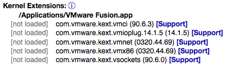 Lists any 3rd party kernel extensions. These extensions actually modify your operating system. Many may be necessary for hardware or software you want to run. However, because they run deep within the core of the operating system, they can destabilize your computer. The most common result from misbehaving kernel extensions are kernel panics where “you need to restart your machine”. -
Startup Items:
These items start up with your Macintosh. They no longer function on OS X “Yosemite” or later. If you have items listed here, then you need to contact the developer of that software and update it. -
Problem System Launch Agents:
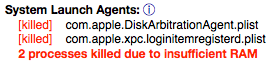 These are any low-level, Apple-provided parts of your operating system that run hidden. Any failure that appears here may indicate a problem with your system. There may be a long list of killed processes due to memory pressure. This means your computer needs more RAM. -
Problem System Launch Daemons:
Same as above. -
Launch Agents:
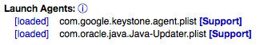 Same as above, but for 3rd party software. It is common for software to use 3rd party launch daemons. However, this software is always running in the background. -
Launch Daemons:
Same as above. -
User Launch Agents:
Similar to the above. The biggest difference is that this software runs under your normal user account instead of as the super-user. This section may include evidence of scam-ware or adware. -
User Login Items:
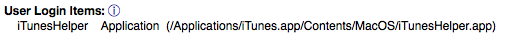 These are programs that start as soon as your login to the computer. If there are many items, you can run out of memory or your machine could run slowly. -
Other apps:
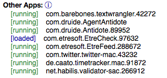 There are many programs that are started dynamically. Sometimes these are helpers, modern login items, or just about anything else. They may not be visible, so EtreCheck prints them here. -
Internet Plug-ins:
These items could impact your web browsing. -
Safari Extensions:
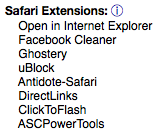 These items could impact your web browsing. -
Time Machine:
It is critical to have a good backup. All Mac users should be running Time Machine. -
Top Processes by CPU:
These are the apps that are currently using the majority of your processing capacity. -
Top Processes by Memory:
Same as above, but for memory usage. -
Virtual Memory Information:
Unfortunately, as of OS X “Yosemite” and later, this section has little value. OS X tries to use all of your RAM so you should have very little free RAM. OS X “Yosemite” and later may perform poorly on machines with only 4 GB. Older machines with only 4 GB RAM and an old hard drive may run particularly bad on OS X “Yosemite” and later. -
Diagnostics:
Recent diagnostic files generated by your system. EtreCheck includes crash, hang, and CPU reports for the past three days. All kernel panic reports are also included, as is your most recent self-test results. For best results, run EtreCheck as an Administrator user (this is the default setting).
When the EtreCheck report is complete, you can share it by copying it to the clipboard. Please remember that Etresoft, Inc. cannot guarantee the accuracy of any suggestions you may receive on an internet discussion forum.